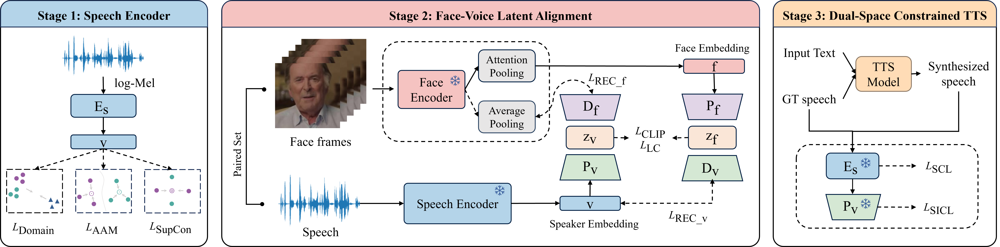

Dual-Space Constrained Face-Based Zero-Shot Text-to-Speech Synthesis

Overview of the proposed DSC-TTS framework.
Abstract
A human face conveys rich cues about speaker identity, enabling face-based zero-shot text-to-speech (TTS) for unseen speakers. However, in modular face-based TTS systems, the acoustic model is typically trained on speech-derived embeddings, while face-derived representations are introduced only at inference time, often resulting in identity drift. We propose Dual-Space Constrained TTS (DSC-TTS), a modular framework that enforces identity consistency during acoustic model training in both the speaker embedding space and a shared identity space learned through face-voice alignment. By constraining representations across these complementary spaces, the proposed framework improves speaker identity stability while preserving speech quality. Experiments demonstrate higher speaker similarity and stronger identity consistency than existing face-based TTS methods.
Audio Samples Comparison
For modular baselines (Face2Speech, SYNTHE-SEES, Face-StyleSpeech), we adopt their original face-voice alignment architectures within a unified TTS framework. All systems share the same acoustic model and speaker encoder, with differences in alignment module design and speaker embedding learning.
VoxCeleb2 Dataset
Face images from VoxCeleb2 and text sentences from LibriTTS test-clean set are used for synthesis.
| Face | Text | Ground Truth | FaceTTS | Face2Speech | SYNTHE-SEES | Face-StyleSpeech | DSC-TTS (Ours) |
|---|
LRS2 Dataset
Sample-level evaluation on LRS2 tri-modal dataset under corpus mismatch.
| Face | Text | Ground Truth | FaceTTS | Face2Speech | SYNTHE-SEES | Face-StyleSpeech | DSC-TTS (Ours) |
|---|
BibTeX